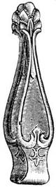

Jam Roley Poley

Ingredients
- 10 lbs. White Sugar.
- 5 lbs. Glucose.
- 2 lbs Gelatine.
- Carmine Color.
- 1 lb. Raspberry Jam.
- 1 lb. Desiccated Cocoanut.
- 3 pints Water.
Steps
- Soak the gelatine in cold water for twelve hours.
- Boil the sugar, glucose and water sharply to stiff ball.
- Remove the pan from the fire, stir in the gelatine, stand aside till scum rises and skim it off.
- Divide the boil into two portions.
- Mix together 1 oz. tartaric acid, 1 oz. carbonate of soda, 2 oz. icing sugar.
- Drop this powder and the desiccated cocoanut into one half of the boil and stir briskly until the whole rises in a white foam, then run out into tins, on sheet about 1/4 inch thick.
- Now take the other half, color bright red, adding the raspberry jam; stir till thoroughly mixed and run this on top of the white sheet about the same thickness.
- When cold and hard, take out the sheets and make a roll of each.